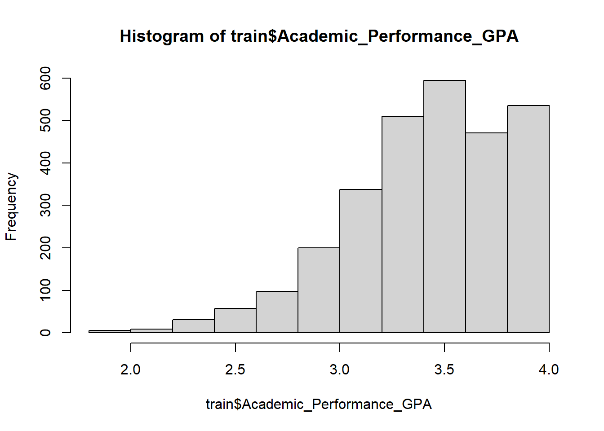
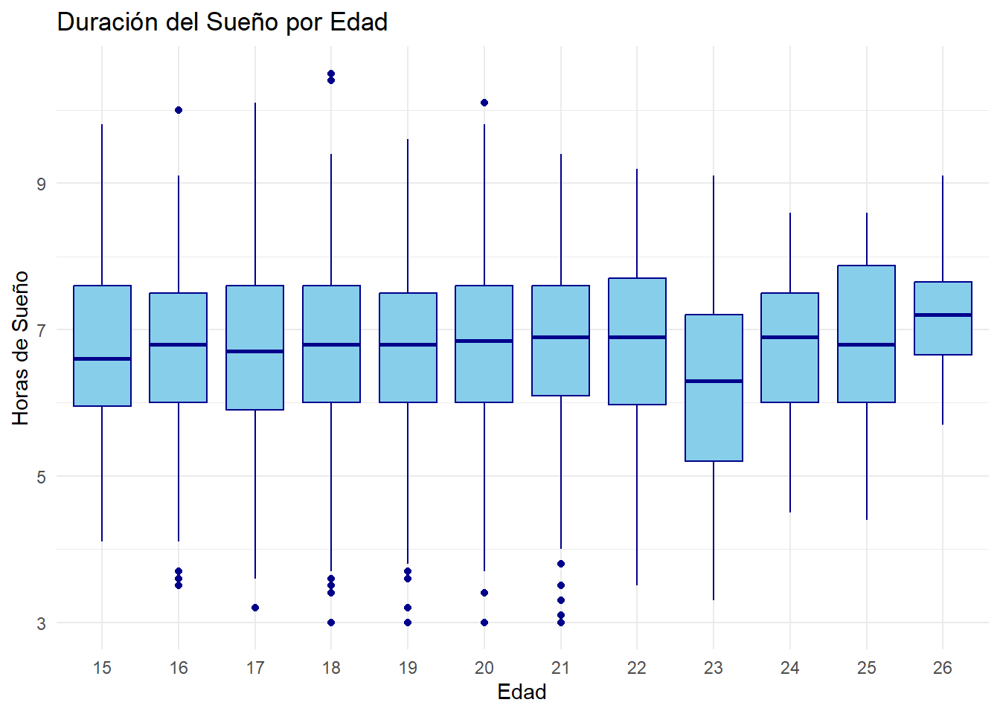
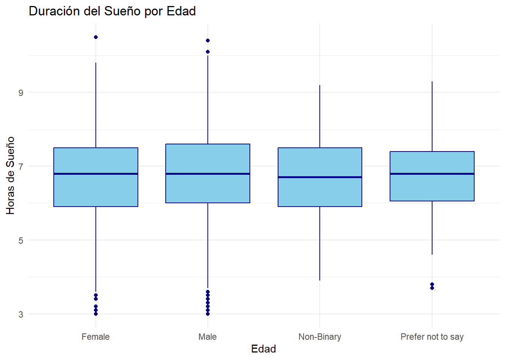

Warning: package 'summarytools' was built under R version 4.5.3
library(ggplot2)library(caret)
Warning: package 'caret' was built under R version 4.5.3
Cargando paquete requerido: lattice
load("~/Mineria-de-datos-/datos.Rdata") # investigar más
Introducción
h
Datos
…
El conjunto de datos…
dim(datos)
[1] 4500 16
head(datos)
Student_ID Age Gender Academic_Level Primary_Platform Daily_Usage_Hours
1 STU_2024000 19 Female Undergraduate Snapchat 7.5
2 STU_2024001 19 Female Undergraduate Instagram 4.6
3 STU_2024002 17 Female High School TikTok 10.9
4 STU_2024003 16 Female High School YouTube 6.0
5 STU_2024004 17 Male High School LinkedIn 3.3
6 STU_2024005 16 Male High School TikTok 6.2
Weekend_Extra_Hours Device_Type Sleep_Duration_Hours Sleep_Quality_Score
1 1.5 Smartphone 5.9 2
2 1.3 Smartphone 7.9 3
3 1.7 Smartphone 5.2 1
4 2.3 Tablet 7.6 4
5 2.6 Smartphone 7.6 4
6 1.6 Smartphone 5.9 1
Late_Night_Usage Social_Comparison_Frequency Perceived_Stress_Score
1 Sí Always 20
2 Sí Sometimes 17
3 Sí Frequently 18
4 Sí Sometimes 15
5 Sí Never 16
6 No Rarely 10
Mental_Health_Index Academic_Performance_GPA Overall_Impact
1 73 2.73 Neutral
2 90 3.21 Beneficial
3 70 3.00 Neutral
4 82 3.42 Beneficial
5 84 3.41 Beneficial
6 66 3.21 Beneficial
Descripcion de las variables
Describir cada variable y que valores posibles toman
Student_ID: Identificador único (alfanumérico) asignado a cada alumno registrado en el estudio.
Age: Edad del estudiante. Toma valores numéricos enteros.
Academic_Level: Nivel académico o educativo. Variable categórica.
Primary_Platform: Plataforma de redes sociales principal que utiliza el usuario. Variable categórica.
Daily_Usage_Hours: Promedio de horas diarias dedicadas al uso de redes sociales, es una variable numérica continua.
Weekend_Extra_Hours: Horas adicionales de consumo digital durante los findes de semana.
Device_Type: Dispositivo principal desde el que accede a las redes, variable categórica.
Sleep_Duration_Hours: Duración media del sueño por noche en horas. Variable numérica continua.
Sleep_Quality_Score: Puntuación sobre la calidad del sueño. Toma valores numéricos enteros entre 1 y 5, donde los valores más bajos indican peor descanso.
Late_Night_Usage: Indica si el usuario utiliza las redes sociales a altas horas de la noche. Es una variable booleana.
Social_Comparison_Frequency: Frecuencia con la que el estudiante se compara con otros en las redes sociales, variable categórica.
Perceived_Stress_Score: Nivel o puntuación de estrés. Es una variable numérica basada en escalas psicométricas.
Mental_Health_Index: Índice general de salud mental del estudiante. Variable numérica.
Academic_Performance_GPA: Calificación o promedio académico. Variable numérica continua.
Overall_Impact: Variable objetivo o de salida que resume el impacto global de las redes sociales en la vida del usuario. Esta variable es categórica.
A partir de ahora trabajamos únicamente con train. Sobre train haremos todo el análisis exploratorio de datos. Usaremos test para ir evaluando y estudiando la capacidad de generalización de los modelos que entrenemos en train. Por último, dejaremos la partición de validación para el final del todo del proyecto: una vez tengamos un modelo final seleccionado estudiaremos su rendimiento en esta partición de validación. Esto nos permitirá simular un caso real en el que podamos estudiar cómo funciona nuestro modelo final ante datos nunca vistos.
Análisis exploratorio de datos
summary(train)
Student_ID Age Gender
Length:2927 Min. :15.00 Female :1461
Class :character 1st Qu.:17.00 Male :1328
Mode :character Median :19.00 Non-Binary : 83
Mean :18.72 Prefer not to say: 55
3rd Qu.:20.00
Max. :26.00
Academic_Level Primary_Platform Daily_Usage_Hours Weekend_Extra_Hours
High School : 945 Instagram :933 Min. : 0.900 Min. :0.0
Undergraduate:1811 LinkedIn : 62 1st Qu.: 3.400 1st Qu.:1.3
Postgraduate : 171 Reddit :137 Median : 4.700 Median :1.8
Snapchat :321 Mean : 5.289 Mean :1.8
TikTok :806 3rd Qu.: 6.600 3rd Qu.:2.3
X (Twitter):143 Max. :14.000 Max. :4.5
YouTube :525
Device_Type Sleep_Duration_Hours Sleep_Quality_Score Late_Night_Usage
Laptop/PC : 381 Min. : 3.0 Min. :1.00 Sí:1717
Smartphone:2460 1st Qu.: 6.0 1st Qu.:2.00 No:1210
Tablet : 86 Median : 6.8 Median :3.00
Mean : 6.7 Mean :2.48
3rd Qu.: 7.5 3rd Qu.:3.00
Max. :10.5 Max. :5.00
Social_Comparison_Frequency Perceived_Stress_Score Mental_Health_Index
Never : 155 Min. : 0.00 Min. :32.0
Rarely : 492 1st Qu.: 9.00 1st Qu.:72.0
Sometimes :1038 Median :13.00 Median :82.0
Frequently: 823 Mean :13.56 Mean :79.9
Always : 419 3rd Qu.:18.00 3rd Qu.:89.0
Max. :40.00 Max. :98.0
NA's :33
Academic_Performance_GPA Overall_Impact
Min. :1.900 Negative : 108
1st Qu.:3.200 Neutral : 426
Median :3.460 Beneficial:2393
Mean :3.427
3rd Qu.:3.720
Max. :4.000
NA's :46
Como la cantidad de NA’s es pequeña decicimos no trabajar con dichas observaciones.
train <-na.omit(train)
Como no tenemos un target binario y tenemos dudas entre 2 posibles candidatos para variable objetivo, vamos a estudiar su comportamiento y relación.
Ya hemos solventado la duda que teníamos sobre si Overall_Impact podría ser una categorización de Academic_Performance_GPA. El boxplot de arriba revela que claramente son variables que están relacionadas: notas mayores están más asociadas a la categoría de impacto beneficioso y peores notas están más asociadas a la categoría de impacto negativo. Del mismo modo, notas intermedias se asocian más con un impacto neutral.
Así, decidimos que nuestro target será Academic_Performance_GPA. Como es una variable continua y queremos trabajar con un target binario, debemos binarizarla.
hist(train$Academic_Performance_GPA)

Nos planteamos binarizar en 3.5 para distinguir entre aquellos estudiantes que tienen muy buenas notas y los que tienen malas o intermedias.
train$target <-cut(train$Academic_Performance_GPA, breaks=c(-Inf,3.5,Inf))# Hay que quitar la variable Academic_Performance_GPA
Que preguntas tengo sobre mis datos, objetivos que tengo.
¿Cuál es la proporción de estudiantes con muy buenas notas?
¿Existe diferencia entre la calidad de sueño y el género?
¿Existe diferencia entre la calidad de sueño en función de las notas (target)?
¿Cómo se relaciona la edad con el número de horas de consumo RRSS?
Relación entre horas de uso y mental health
Nos interesa estudiar la relación entre todas las variables y el target.
##¿Existe diferencia entre la longitud del sueño y la edad?
Vamos a estudiar la longitud del sueño dependiendo de la edad
ggplot(train, aes(x =factor(Age), y = Sleep_Duration_Hours)) +geom_boxplot(fill ="skyblue", color ="darkblue") +labs(title ="Duración del Sueño por Edad", x ="Edad", y ="Horas de Sueño") +theme_minimal()

ggplot(train, aes(x = Gender, y = Sleep_Duration_Hours)) +geom_boxplot(fill ="skyblue", color ="darkblue") +labs(title ="Duración del Sueño por Edad", x ="Edad", y ="Horas de Sueño") +theme_minimal()

ggplot(train, aes(x = target, y = Sleep_Duration_Hours)) +geom_boxplot(fill ="skyblue", color ="darkblue") +labs(title ="Duración del Sueño por Edad", x ="Edad", y ="Horas de Sueño") +theme_minimal()